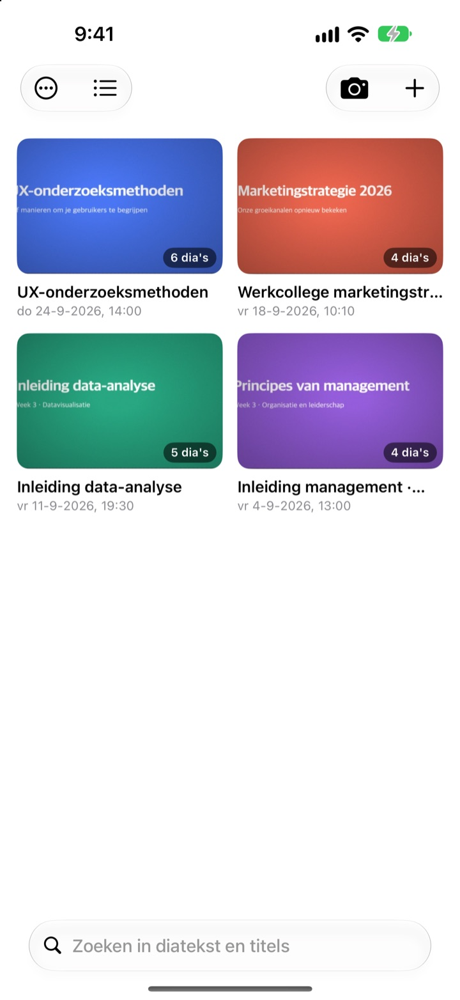
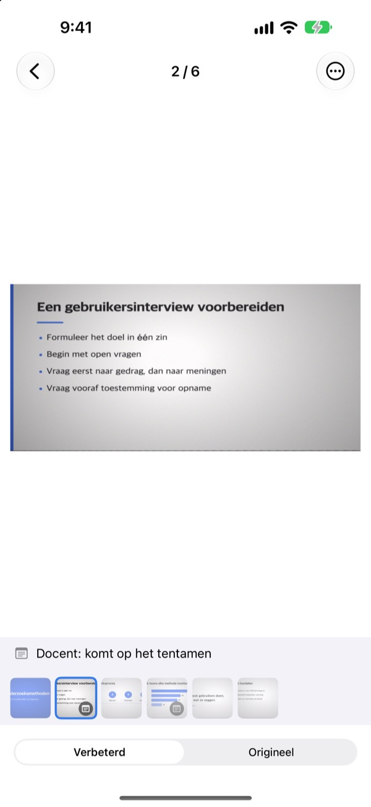
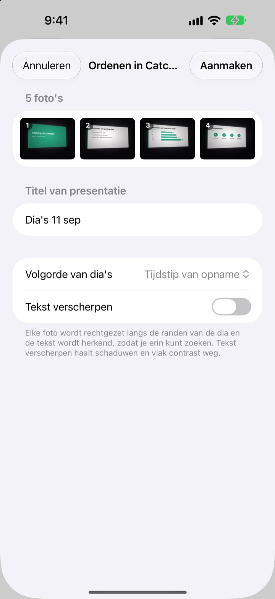
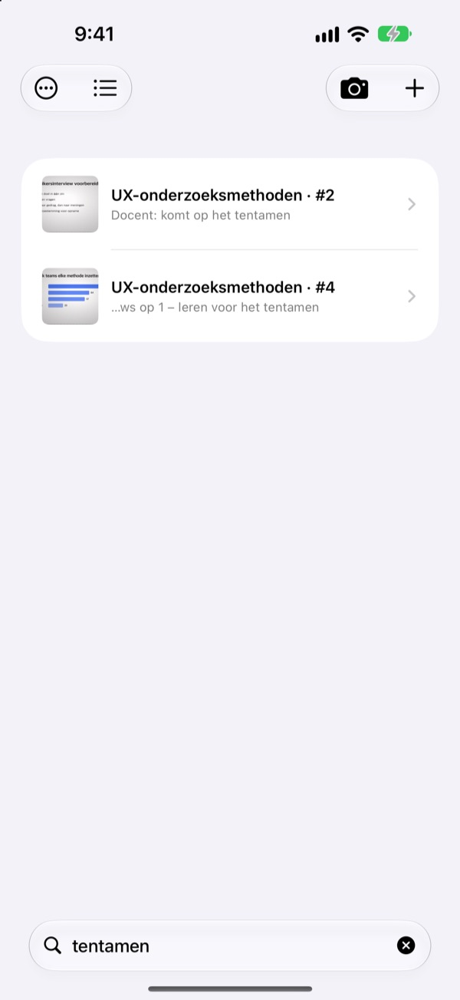

Van opzij gefotografeerd.
Recht van voren bewaard.
De camera vindt alle vier hoeken van de slide, trekt hem recht en snijdt de omgeving weg. Slides die je achter elkaar fotografeert, komen in dezelfde presentatie.
Eén keer kopen, alle functies. Geen abonnement, geen account.

Trek hem zelf recht
Deze foto is schuin genomen vanaf een plek aan de zijkant van de collegezaal. De groene lijn laat zien waar de hoeken van de slide zijn gevonden.
Je fotorol geopend om te leren en de slide niet kunnen vinden?
Slides vanaf de achterste rij staan altijd scheef en verdwijnen tussen selfies en bonnetjes. In een stille collegezaal houdt het sluitergeluid je al tegen. CatchSlide fotografeert geluidloos, trekt elke slide recht en houdt ze bij elkaar per presentatie.
Recht op het moment dat je fotografeert
De camera volgt live de vier hoeken van de slide en wordt groen zodra hij ze heeft. Ook schuin genomen wordt de slide rechtgetrokken alsof je ervoor zat, zonder achtergrond.
Geen sluitergeluid. Zet Automatisch vastleggen aan en elke nieuwe slide wordt vanzelf vastgelegd, onscherpe foto’s worden overgeslagen.

Foto’s die je al hebt, in één keer
Kies een paar collegefoto’s in Foto’s en deel ze met CatchSlide. Ze worden rechtgetrokken en als één presentatie bewaard, in de volgorde waarin je ze nam.Tekst verscherpen haalt schaduwen en een flets contrast weg.

Eén woord is genoeg
CatchSlide leest de tekst op elke slide direct op je apparaat. Ook weken later brengt één woord je terug naar de juiste slide.
Notities bij slides zijn ook doorzoekbaar. Zet tentamen bij een paar en alle stof voor het tentamen staat in één zoekopdracht klaar.

In drie stappen aan de slag
- 1
Open de camera
Met de cameraknop in de lijst, de widget op het beginscherm of vanaf het toegangsscherm.
- 2
Zet de slide in beeld
Worden de hoeken groen, druk dan af of laat automatisch vastleggen het doen.
- 3
Terugkijken per presentatie
Zoek, voeg notities toe en exporteer een pdf om van te leren.
Wat je met een presentatie kunt
- Opname
- Neem geluid op terwijl je fotografeert en luister elke slide terug vanaf het moment dat je hem nam
- Transcriptie
- Zet de opname om in tekst, laat zien wat er bij elke slide is gezegd en telt mee bij het zoeken
- AI-samenvatting
- Vat de presentatie samen op basis van slidetekst en transcriptie (iOS 26 of nieuwer op apparaten met Apple Intelligence)
- Studiemateriaal met één, twee of vier slides per pagina
- Markdown
- Een .zip klaar voor Notion of Obsidian
- PowerPoint
- Exporteert een .pptx met de transcriptie in de sprekersnotities
- Samenvoegen
- Kies een paar presentaties en voeg ze samen tot één
- iCloud-synchronisatie
- Zet het aan om je presentaties te zien op andere apparaten met hetzelfde Apple ID. Staat standaard uit
- Widgets
- Openen de camera direct vanaf het beginscherm of het toegangsscherm
Tekstherkenning, transcriptie en AI-samenvattingen gebeuren op je apparaat.
Eén keer kopen, alles erin
CatchSlide
- Geluidloos fotograferen, automatisch vastleggen en rechttrekken
- Meerdere foto’s tegelijk importeren uit Foto’s
- Slides per presentatie, zoeken in tekst en notities
- Opname, transcriptie en AI-samenvatting
- Exporteren naar pdf, Markdown en PowerPoint
- iCloud-synchronisatie en widgets
Fooi (vrijwillig)
- Heb je wat aan de app, dan kun je de ontwikkelaar een kleine fooi geven
- Een fooi ontgrendelt niets. Alle functies werken ook zonder
Je vindt het onder Mijn gegevens.
Geen abonnement en geen betaalde extra’s. De prijs voor jouw land zie je in de App Store.
Veelgestelde vragen
Hoe fotografeer ik een slide?
Open de camera en zet de slide in beeld. Worden de hoeken groen, druk dan af. Met automatisch vastleggen aan wordt de volgende slide vanzelf vastgelegd zodra hij verandert.
Is er een sluitergeluid?
Nee. Het beeld wordt direct uit de camera bewaard, dus het is in elk land geluidloos.
Waarom staan mijn foto’s in één presentatie?
Neem je de volgende foto binnen 5 minuten na de vorige, dan hoort die bij dezelfde presentatie. Tik op de titel in de lijst om hem te hernoemen en gebruik Presentaties samenvoegen om gesplitste presentaties weer samen te voegen.
Kan ik foto’s toevoegen die ik al heb?
Ja. Selecteer ze in Foto’s en deel ze met CatchSlide, of tik op ＋ in de lijst en kies Importeren uit Foto's. Ze worden rechtgetrokken en als één presentatie bewaard in de volgorde waarin ze zijn genomen.
De hoeken zijn verkeerd gevonden.
Open de slide, kies Hoeken aanpassen in het ⋯-menu en sleep de vier hoeken op hun plek. Automatisch detecteren zoekt ze opnieuw en Hele afbeelding gebruikt de hele foto. Het origineel blijft altijd bewaard, dus je kunt het altijd opnieuw doen.
Kan ik zoeken in de tekst van mijn slides?
Typ een woord in het zoekveld boven de lijst. Er wordt gezocht in slidetekst, titels, notities en transcripties, en je springt meteen naar de slide. Tekstherkenning gebeurt op je apparaat.
Hoe exporteer ik een pdf?
Open in een presentatie het deelmenu, kies Exporteren als pdf en kies één, twee of vier slides per pagina. Via het deelvenster bewaar je hem in Bestanden of stuur je hem naar een andere app.
Hoe verander ik de volgorde of verwijder ik slides?
Houd in een presentatie een slide ingedrukt en sleep hem. In hetzelfde menu verwijder of deel je een slide, en met Selecteren verwijder je er meerdere tegelijk.
Hoe werken opname en AI-samenvatting?
Zet bovenin de camera Opnemen aan en elke slide bewaart het geluid van dat moment. Onder Presentatienotities maakt Samenvatten met AI een samenvatting op basis van slidetekst en transcriptie. Daarvoor heb je iOS 26 of nieuwer nodig op een apparaat met Apple Intelligence.
Waar worden mijn slides en opnames bewaard?
Op je apparaat. Ze gaan alleen naar je eigen iCloud als je Synchroniseren aanzet onder Mijn gegevens, en je hebt geen account nodig. Meer in het privacybeleid.
Vragen, bugs of ideeën? Mail naar leeo@kakao.com.